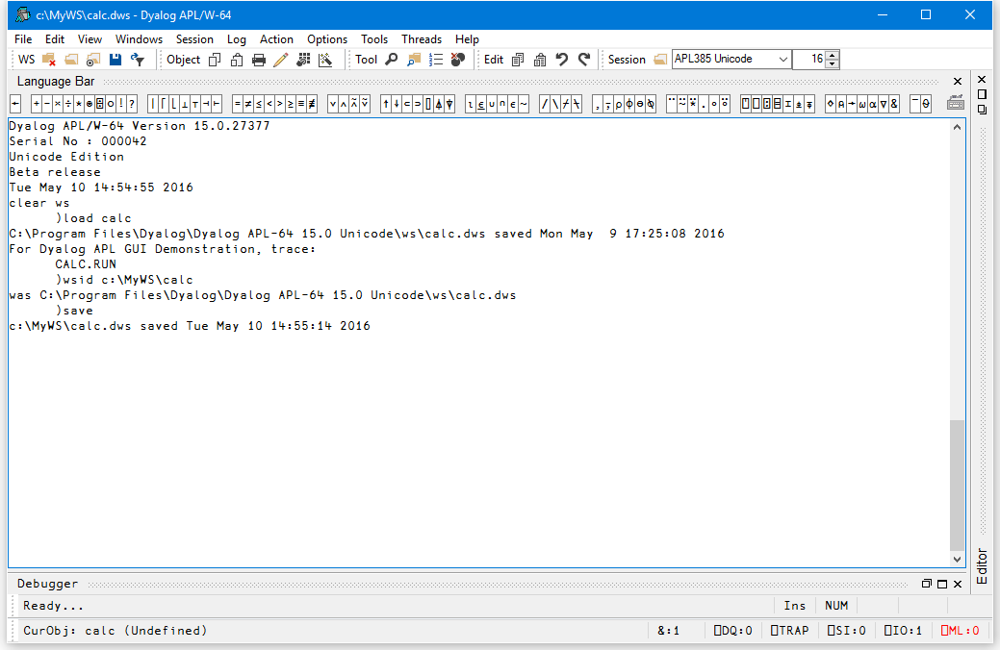
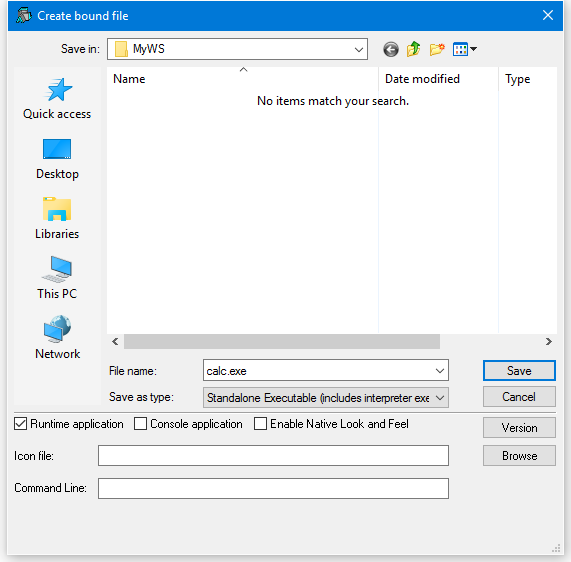
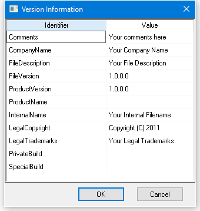
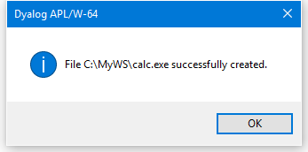

Creating Executables and COM Servers
Dyalog APL provides the facility to package an APL workspace as a Windows executable (EXE), an OLE Server (in-process or out-of-process), an ActiveX Control or a .NET Assembly. This may be done by selecting Export … from the File menu of the APL Session window which brings up the Create bound file dialog box as illustrated later in this section.
The Create bound file dialog box offers selective options according to the type of file you are making. The system detects which of these types is most appropriate from the objects in your workspace. For example, if your workspace contains an ActiveXControl namespace, it will automatically select the ActiveX Control option.
If you are creating an executable (EXE) the system provides the following options:
- You may bind your EXE as a Dyalog APL run-time application, or as a Dyalog APL developer application. The second option will allow you to debug the application should it encounter an APL error.
- You may bind your EXE as a console-mode application. A console application does not have a graphical user interface, but runs as a background task using files or TCP/IP to perform input and output.
- You may specify whether or not your .EXE will honour Native Look and Feel.
You can package the workspace as a stand-alone executable or as a .EXE file that must be accompanied by the Dyalog APL Dynamic Link Library (dyalog150.dll or dyalog150rt.dll), in which case the DLL should be installed in the same directory (as the EXE) or in the Windows System directory.
Various Dyalog-supplied files are required (such as the runtime DLL for creating a bound runtime executable); all such files are assumed to reside in the Dyalog directory, as specified by default in the registry. The location of this directory is most easily reported by calling
+2⎕NQ '.' 'GetEnvironment' 'Dyalog'The creation of both in-process and out-of-process COM servers produces a .TLB (Type Library) file. This file is created in the same directory as the workspace - so write access must be allowed to this directory. In the case of an in-process server, the content of this file is then embedded into the DLL, and the file is deleted. For an out-of-process server the file persists and may be needed at runtime. This requirement means that even if you do not )SAVE the workspace, you should set the workspace name so that )SAVE would work - that is the directory where the workspace would be saved has write access.
In addition, a temporary copy of your workspace is created, the location of which is determined by the Windows function GetTempPath().
All registration information is written to HKEY_LOCAL_MACHINE in the registry which will require enhanced permissions (aka "run as administrator") for the Dyalog interpreter. Later versions of the interpreter may provide an option to write to HKEY_CURRENT_USER.
The Create bound file dialog box contains the following fields. These will only be present if applicable to the type of bound file you are making.
| Item | Description |
|---|---|
| File name | Allows you to choose the name for your bound file. The name defaults to the name of your workspace with the appropriate extension. |
| Save as type | Allows you to choose the type of file you wish to create |
| Runtime application | If this is checked, your application file will be bound with the Run-Time DLL. If not, it will be bound with the Development DLL. The latter should normally only be used to permit debugging. |
| Console application | Check this box if you want your executable to run as a console application. This is appropriate only if the application has no graphical user interface. |
| Enable Native Look and Feel | If checked, Native Look and Feel will be enabled for your bound file; otherwise it will be disabled. |
| Icon file | Allows you to associate an icon with your executable. Type in the pathname, or use the Browse button to navigate to an icon file. |
| Command line | For an out-of-process COM Server, this allows you to specify the command line for the process. For a bound executable, this allows you to specify command-line parameters for the corresponding Dyalog APL DLL. |
The following example illustrates how you can package the supplied workspace calc.dws as an executable. Before making the executable, it is essential to set up the latent expression to run the program using ⎕LX as shown. In this case, it is not necessary to execute ⎕OFF; the calc.exe program will terminate normally when the user closes the calculator window and the system returns to Session input.
In this example, the supplied workspace calc.dws is first saved to a directory to which the user has write access and, just to make certain, the Dyalog program is run as Administrator.

Then, when you select Export… from the File menu, the following dialog box is displayed.

The Save as Type option has been set to Standalone Executable (includes interpreter exe) which means that a single .exe will be created containing the Dyalog APL executable and the CALC workspace.
The Runtime application checkbox is checked, indicating that calc.exe is to incorporate the runtime version of Dyalog APL.
As this is a GUI application, the Console application checkbox is left unset.
If you enter the name of a file containing an icon (use the Browse button to browse for it), that icon will be bound with your executable and be used instead of the standard Dyalog icon.
The Command Line box allows you to enter parameters and values that are to be passed to your executable when it is invoked.
Version Information
You may embed version information into your .exe by clicking the Version button and then completing the Version Information dialog box that is illustrated below.

On clicking Save, the following message box is displayed to confirm success.
